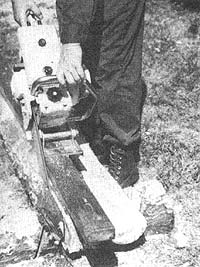
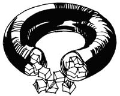
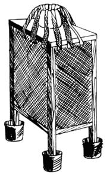
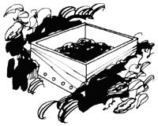
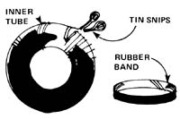

Mother's Down-Home Country Lore
Down home tips from readers: Ms Oleweiler on heat stroke; Arthur Robinson a lawnmower becoming a cart; Nancy Springer on drying okra; Laura Underwood on weaning a bottle fed kid; Bob Snyder on crushing ice cubes with a tire tube; Bob Foust on using a rubber boot as a foot bath for a horse; Berkley Ruiz on a fresh smelling tent; George Steging on a water cooled, burlap refrigerator; Camille Ziuny on deterring ants with sassafras roots and tea; Debbie Lyons and AE Lamb on getting animals to swallow pills; Janet Sentner on cleaning grease from a floor; Susan Marling on extracting a splinter; Lynn Spaulding on clipped chicken wings; William Jaeger on mouse traps; Vivian Shrider growing cucumbers with chicken manure; Ken Smith on rubber bands from inner tubes; Ethel Johnson on using stockings as garden powder dusters; Jackie and Larry Arnold on buying calves at auction
By the Mother Earth News editors
July/August 1977
Now a new chain saw accessory so you can make your own lumber from logs right where they lie; good lumber, for your own "A" frame, log cabin, lean-to, duck blind; and fences, dog houses, piers, furniture, beams, tables, any thing needing lumber, any size lumber, for any use, saving you dollars in your pocket. It's the
LUMBER/MAKER (restricted)
It fits all saws, installs in seconds and usually pays for itself in the very first day!! Your chain saw becomes twenty times more useful with the LUMBER/MAKER than it is without it.
The LUMBER/MAKER is light in weight, 4 lbs., well engineered, and thousands are already in use. It really puts a saw to work. Yes, you can change waste lumber into valuable products, yet no special skills are needed.
A descriptive brochure on this little wonder tool, with it's eight separate patented features is yours on request, with price, shipping instructions and a drawing of the entire tool. There are 29 pictures showing the LUMBER/MAKER at work making timbers, boards, dimensions, how it helps with sharpening, how it saws angles. And remember, every LUMBER/MAKER shipped comes to you completely assembled, with 24 pages of "how to", projects to do, and complete plans for a log cabin.
If you have a chain saw, or are going to get one, you owe it to yourself to look into this new tool. No obligation, just write for information to
Department M
Haddon Tools
4719 West route 120
McHenry, III. 60050
You will be glad you did!!!
Hot sun makes for fine hay . . . but it can also cause headaches or even heat stroke, unless you take Ruth Oleweiler's advice and wear a straw hat dipped in cold water whenever you're working outside on a hot, sunny day. "The evaporating water will cool your head," Ms. Oleweiler writes from Birdsboro, Pennsylvania, "and the headgear can be dunked again when it dries."
That old power mower you're about to consign to "lawn mower heaven" can be converted into a great yard cart or tool caddy, says Arthur Robbins of Hooks, Texas. Just remove the engine and mount a garbage can on the platform, and voila! The broken-down machine becomes a handy pushcart.
"Wait!" says Nancy Springer of Watervliet, Michigan. "Before you feed all that extra okra to the pigs, try drying it. Slice the pods into thin rounds, lay them out, and-after the slices have dried-store them in tightly sealed jars or cans. Months later-when the cold winds begin to blow again-you'll be glad you have your own dried 'gumbo' to toss into the stew."
It's not hard to teach a bottle-fed goat kid to drink milk from a pan, if you use the technique recommended by Laura Underwood of Missouri Valley, Iowa. Laura simply holds a rubber nipple's large end down in a shallow container of milk at feeding time. As the kid sucks on the familiar nipple, it learns to drink head-down . . . and the young animal is fully dish-trained after only two or three sessions.
Here-courtesy of Bob Snyder of Liberty, Tennessee-is an easy way to make big blocks of ice into smaller ones that can be used in your ice cream maker, without scattering frozen chips from here to the next county in the process: "Cut an old inner tube," says Bob, "so that it can be uncurled into a 'U' shape. Then poke your chunks of ice into the tube's open ends, give the lumpy 'container' several good whacks with your mallet or hammer . . . and pour your pulverized ice from the open ends of the rubber sleeve."
When a large animal has a foot injury, it's often difficult to keep the sore extremity in a bucket long enough to give it a good, healing soak. Bob Foust of Middlefield, Ohio solves this problem very simply . . . by fitting a rubber boot over the injured leg. Bob (a farrier by trade) first ties the toe of the footgear so it won't get in the way, then slips the boot over the animal's foot and pours the medicinal solution right into the overshoe (which can be tied on, if necessary). This way, the patient can stomp around all it wants to but it can't walk away from the treatment!
Next time-before you fold up your tent for storage-toss a few sprigs of pine (or-preferably-balsam) into the portable shelter. "The evergreen aroma will mask the characteristic canvas odor," says Berkley Ruiz of Windsor, Georgia, "and for a while, at least, you'll have a delightfully fragrant tent."
Question: How can you keep eggs, butter, milk, and other perishables fresh without using gas, electricity, or ice?
Answer. "You rig up a cooler," explains Mr. George Staging of Clovis, California, "like the one our family used during the 30's. It's not hard to do: First-using two-by-twos or scrap lumber-construct a tall box frame with several shelves, and nail wooden slats across the top of the structure. Next, tack burlap around the four sides of the cooler and soak the fabric in cold water. To keep the burlap wet, set a tub of water on top of the frame, place long strips of cloth in the water, and drape the strips over the side of the cooler so that they touch the burlap 'walls'. Water will travel by capillary action through the rags to the walls, and the continuous evaporation-unless the air is extremely humid-will effectively cool viands stored inside the enclosure."
Mr. Steging offers one more tip: To keep ants out of your edibles, set each leg of the cooler in a can that is partly filled with water.
The news from Camille Ziuny of Wapwallopen, Pennsylvania is that ants apparently don't like sassafras at all. Camille-who had begun to suspect that the ground under her home was part of a giant anthill-found that the long columns of the insects which entered her kitchen quickly vanished after she began to store sassafras roots with the foods the ants were invading. (Ms. Ziuny further discouraged the pests by pouring strong sassafras tea on the anthills around her house.)
Here are two sneaky ways to get an ailing animal to swallow its pills: [1] Wrap the bolus in a small piece of bread, then feed the "medicated bread" to the sick animal (a technique used with success by Debbie Lyons of Caldwell, South Dakota). [2] Thoroughly crush the pill and mix it with a small amount of grain, then cover the mixture and let it stand overnight. According to A.E. Lamb of Fresno, California (who sent us this hint), even the most finicky goat will gobble the medicated chow for breakfast.
"If you happen to spill grease on a wooden floor," writes Janet Sentner of Pittsburgh, Pennsylvania, "immediately pour cold water-the colder the better-on the spot to harden the fat and prevent its absorption by the wood . . . then use a knife to scrape the cooled, solidified drippings from the floor."
"The easiest way I know to extract a painful splinter," says Susan Marling of Calimesa, California, "is to tape a piece of bacon, bacon grease, ham, or pork chop securely over the skin where the splinter entered. In an hour-when you remove the piece of pork-you should find that the wood sliver has been drawn to the surface . . . possibly even removed."
So you've fenced your chickens in . . . but the birds fly right over their barrier? Lynn Spaulding of Beaverlodge, Alberta, Canada offers this reminder. "If you'll clip each biddy's wing feathers on one side only, the birds will find it impossible to balance well enough to soar over their enclosure."
Once in a while, those bean sprouts you've been raising on the kitchen counter can get away from you and develop a case of the "creeping gray fuzzies". The moldy sprouts needn't be a total loss, though: "Plant them in your garden," suggests Pat Schosser of Green Lane, Pennsylvania. "In a couple of months, you might be able-as I've been-to harvest a new crop of seeds for sprouting."
Need a non-toxic fly and mosquito repellent for your livestock? Susan Russo of Sarasota, Florida suggests that you rub each animal's body with wedges of either citron or yellow watermelon. (If you don't have the citron or watermelon in your garden, you'll find that a citronella candle rubbed over the hide works almost as well. Don't feed the leftover stub to your furry friends, though!)
Instead of melting cheese onto the mouse trap (as one reader suggested), William Jaeger of Pompton Lakes, New Jersey simply binds his bait to the trap's trigger by winding thread around the two. "If you encircle the bait with eight to ten winds of thread," says William, "you don't even have to tie off the ends."
"My mother always raised huge crops of bug-free pickles from just a few cuke plants," says Vivian Shrider of Fostoria, Ohio. "All she did was bore holes in the sides of a 14-inch by 14-inch wooden box, fill the crate halfway with chicken manure, bury all but the top four to five inches of the manure-box in the vegetable garden, then plant cucumber seeds around the partly submerged crate. Throughout the season-as the cukes grew-she poured all her laundry and dishwashing water into the box, taking care not to splash the liquid into the plants. We don't know why, but this method always gave us a superb crop of pickles . . . and we never had to worry about insect pests!"
Ken Smith of Columbus, Ohio makes rubber bands from old inner tubes . . . and so can you. Just use tin snips to cut across the tube, and make strips of various widths to serve different purposes. What kind of purposes? Ken reports that he's used his homemade bands to clamp freshly glued objects, group boxes together, keep lids on containers, and keep gear from shifting on a pack frame (but not to attach the load to the frame).
Mrs. Ethel Johnson of Campbellsburg, Indiana saved herself the price of a garden duster by scooping wood ashes into an old sheer nylon stocking and using it as a duster. "Whatever kind of powder you put in the stocking, remember to tie the open end of the hose shut," says Mrs. Johnson. "Then all you have to do is jiggle the 'duster' over your plants as you walk up and down your garden's rows. Works like a charm!"
Remember, when buying calves at auction, that some animals are habitual bloaters, and that one way to detect signs of former trouble in any animal you're thinking of buying is to examine the calf for puncture scars high on its left side. (Puncture is a treatment for bloat.) Jackie and Larry Anderson of Eagle Point, Oregon report that a friend of theirs learned the importance of this precaution the hard way: Shortly after bringing his auction-purchased calf home, it bloated. (Fortunately, the new owner was able to save his animal by poking a garden hose down its throat and into the rumen to release the trapped gas.) Had the Andersons' friend checked before he bought the calf, he would've found that the animal did indeed have a puncture scar from a previous bout of bloat . . . and he could have saved himself a good deal of time and worry.
|
 |
 |
 |
|
 |
 |
 |